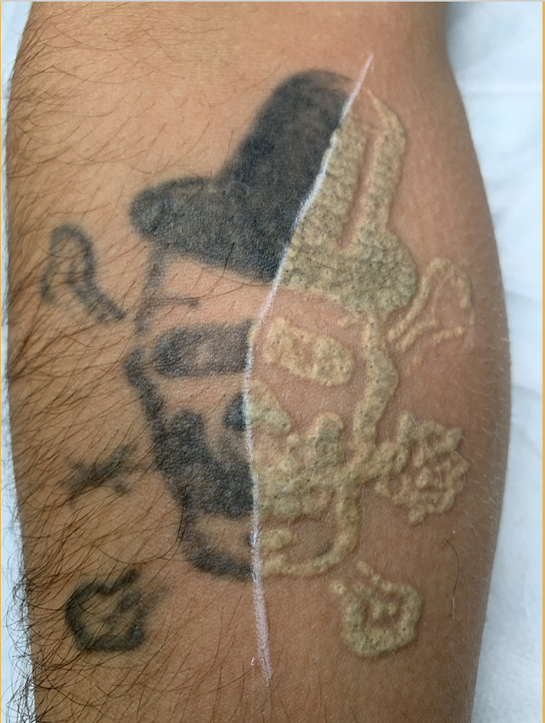
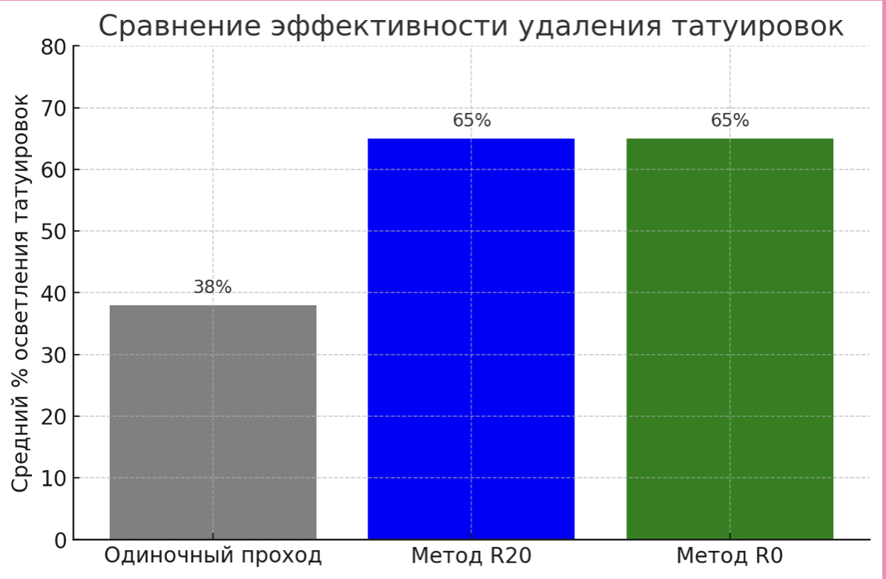
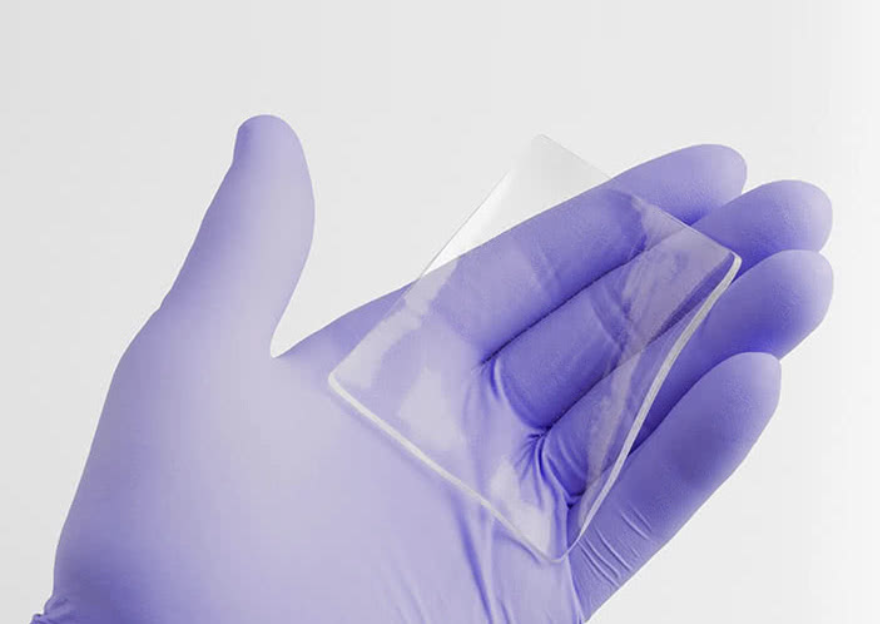
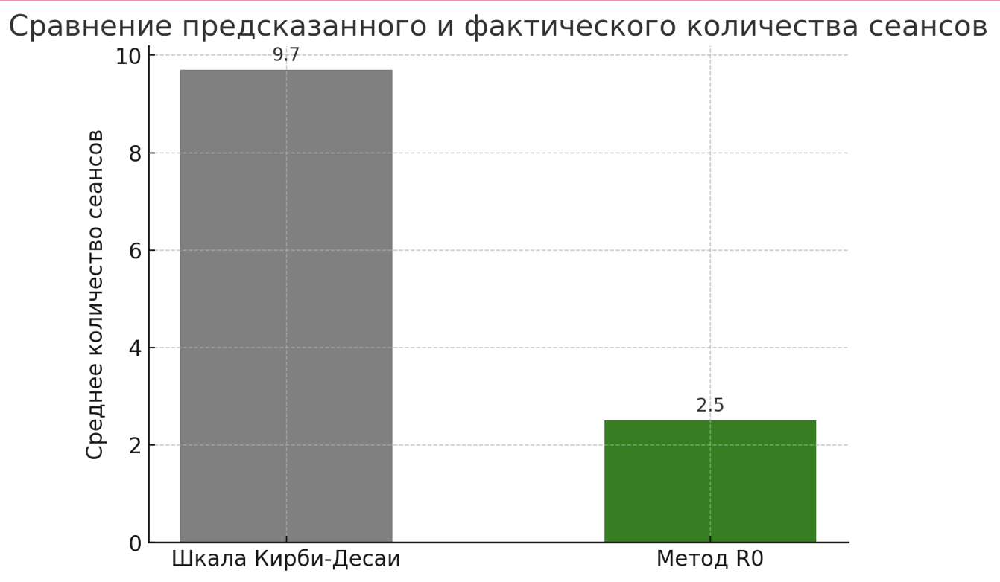

Почему после лазера татуировка внезапно белеет, почему это мешает следующему импульсу — и как жидкость, почти инертная химически, физически меняет всю процедуру.
Что происходит сразу после первого лазерного прохода — и почему мы не можем просто мгновенно сделать второй?
Посмотрите обычное удаление татуировки. После первого импульса зона мгновенно меняется:
PFD-патч появился не как «новое средство для удаления тату» — технология пришла из совсем другой области физики и медицины.
Его роль — временно изменить физическую среду между лазером и тканью:
Поэтому PFD интересен: это не фармакология удаления, а управление физикой процедуры.
Химия, свойства и неожиданное происхождение технологии.
Перфтордекалин — по-английски Perfluorodecalin, сокращённо PFDPFD — perfluorodecalin, перфтордекалин. Жидкий перфторуглерод, химически почти инертный.. Это представитель класса PFCPFC — perfluorocarbons, перфторуглероды. Соединения, в которых водород полностью замещён фтором. — перфторуглеродов.
Принцип простой. В обычном углеводороде часть атомов водорода связана с углеродом. В перфторуглероде весь этот водород замещён фтором — и именно это замещение формирует весь необычный набор свойств, о котором дальше.
Замена водорода на фтор даёт молекуле сразу несколько ярких свойств — они и объясняют, почему PFD ведёт себя не как обычная жидкость.
Физику PFC подробно разбирает современный физиологический обзор перфторуглеродов (обзор PFC, PubMed).
PFD-патч родился не в дерматологии. Он пришёл из совсем другой области физики и медицины — где перфторуглероды изучали как переносчики газов.
Чтобы понять, зачем он нужен под лазером, полезно увидеть, откуда вообще взялась эта жидкость.
Классические эксперименты Clark и Gollan, 1966: перфторуглеродные жидкости, насыщенные кислородом, обеспечивали газообмен у животных, погружённых в них.
PFC растворяли столько O2, что могли доставлять его тканям прямо из жидкой фазы.
Так родилась идея «жидкость как переносчик кислорода» — основа целого направления.
Именно газорастворимость PFC, а не химическая активность, сделала эти опыты возможными.
За десятилетия из простого наблюдения выросло несколько серьёзных медицинских направлений.
Современный обзор прослеживает эту линию — от опытов 1966 года к клиническим разработкам (обзор PFC, PubMed).
Заманчиво сказать: «PFD переносит кислород → значит, улучшает заживление татуировки». Для PFD-патча это упрощение и не доказанный главный механизм.
Газорастворимость PFD важна прежде всего по другой причине: жидкость быстро взаимодействует с газовой фазой, которая возникает после лазерного разрушения пигмента. Речь о физике пузырьков, а не о питании кожи кислородом.
Эта мысль — мост к следующему разделу: разбору физики того, что именно происходит в коже сразу после импульса.
Газы, границы раздела и оптическая доступность ткани.
Когда говорят, что PFC «несёт кислород», важно понять физику. Газ в PFD физически растворяется в жидкости — молекулы газа просто занимают место между молекулами жидкости. Это принципиально не то же самое, что делает кровь.
O2 присоединяется к железу гема. Есть насыщение и кооперативностьКооперативность — связывание одной молекулы O2 облегчает связывание следующих. Даёт S-образную кривую.: кривая насыщения сигмоидальная (S-образная). При высоком давлении гемоглобин «полон» — больше взять почти не может.
O2 ничего не связывает, а просто растворяется. Количество прямо пропорционально парциальному давлению газа — поведение по закону ГенриЗакон Генри — количество растворённого газа пропорционально его парциальному давлению над жидкостью. Даёт прямую линию.. Насыщения нет: выше давление — больше газа, линейно.
PFD не смешивается с водой и плохо взаимодействует с любой водной средой. Он не растворяется в тканевой жидкости и не растворяет её — вместо этого образует отдельную жидкую фазу с собственной чёткой границей.
Именно потому, что PFD — отдельная фаза, он может сесть поверх ткани и работать с газом, а не смешиваться с ней.
Для лазерной медицины прозрачность среды критична. Любая непрозрачная среда в оптическом пути крадёт энергию импульса: поглощает и рассеивает свет ещё до того, как он дошёл до мишени.
Энергия теряется на поверхности — до пигмента доходит меньше, чем задумано.
Свет проходит сквозь него почти без потерь. Поэтому PFD можно поставить прямо в оптический путь лазера — между излучателем и кожей.
Прозрачная жидкость в пути — не помеха, а инструмент: она может улучшить доставку энергии, если правильно управляет границами раздела.
Сразу после импульса в зоне возникает множество границ раздела. На каждой границе свет ведёт себя по-своему — часть отражается, часть преломляется, часть рассеивается в стороны.
У каждой среды свой показатель преломленияПоказатель преломления — насколько среда замедляет и «преломляет» свет. Резкий скачок на границе двух сред усиливает отражение и рассеяние.. Чем резче скачок на границе — тем сильнее отражение и рассеяние. Много микропузырьков = много границ газ–ткань → среда становится оптически мутной, и свет «вязнет» у поверхности.
Собирая всё вместе: прозрачность, гидрофобность и высокая газорастворимость работают на одну задачу — вернуть среде оптическую ясность.
PFD временно восстанавливает оптическую доступность ткани для следующего лазерного прохода. Это физика границ раздела и газовой фазы — не фармакология.
Почему татуировка белеет — и почему это мешает следующему импульсу.
После Q-switchedQ-switched — режим лазера с наносекундными импульсами очень высокой пиковой мощности. или пикосекундного импульса зона татуировки меняется мгновенно — ещё до того, как мы успеваем оценить результат.
Whitening — не «ожог» и не «результат». Это физический сигнал: в ткани появилось оптическое препятствие.

Ещё до PFD физику whitening научились «пережидать». Эта концепция называлась R20R20 — четыре прохода за один визит с интервалом ~20 минут между ними..
Логика проста и честна с точки зрения физики: газовые структуры за 20 минут рассасываются естественным образом — ткань снова становится прозрачной, и импульс опять эффективно проникает вглубь.
Несколько проходов за визит дают более выраженное осветление, чем один-единственный проход. Пациент за одно посещение продвигается заметно дальше.
Практическая цена — время. Четыре прохода с 20-минутными паузами превращают сеанс в почти часовую процедуру.
Обзор описывает R20 как метод четырёх проходов с 20-минутными интервалами для естественного разрешения whitening.
Вместо того чтобы 20 минут ждать естественного исчезновения газовой фазы, можно убрать оптическое препятствие почти сразу — нанеся PFDPFD — перфтордекалин: инертная жидкость, ускоряющая рассасывание газовых микрополостей. между проходами.
Так родился подход R0R0 — «нулевое ожидание»: проходы идут подряд, whitening снимается PFD за секунды. — «нулевое ожидание». Та же физика, но без часовой паузы.

R0 не отменяет физику — он ускоряет исчезновение той же газовой фазы, которую R20 просто ждал двадцать минут. Whitening — это управляемое физическое состояние ткани, а не приговор процедуре.
И чем PFD-патч отличается от жидкого PFD.
Сначала уберём частые ожидания. Важно честно очертить, что PFD физически не способен сделать — тогда его реальная роль станет понятнее.
Его вклад — физический и происходит между импульсами. Два пункта здесь ключевые: механизм и клинический эффект.
Действующее вещество одно, но способ его нанести на кожу — разный. А от этого зависит стабильность процедуры.

Именно патч стал более удобной и стабильной клинической формой технологии. Но суть та же: управление оптической средой между лазером и кожей.
От первой работы R0 до pivotal-исследования: что именно проверяли и что получили.
«Topical perfluorodecalin resolves immediate whitening reactions and allows rapid effective multiple pass treatment of tattoos» Reddy et al., 2013, PubMed
Именно здесь впервые описан подход R0 — нанесение PFD прямо во время процедуры.
Первое сравнительное исследование PFD-патча по внутрипациентной схеме — каждая татуировка была сама себе контролем.
Эффект патча — потенциально многокомпонентный:
Работа, на которую чаще всего ссылаются, говоря об эффективности PFD-патча.
Сравнение по схеме split-tattoo: одна половина татуировки лечилась обычно, вторая — через PFD-патч.
PFD действительно меняет практическую динамику процедуры — быстрее проходы, лучше переносимость, выше предпочтение пациентов. Но выборки пока небольшие — к ограничениям вернёмся отдельно.
Одна из ключевых экспериментальных работ по PFD-патчу измеряла не «эффективность удаления», а физику процедуры: что происходит с поверхностью кожи и с воздухом над ней.
«The effect of the perfluorodecalin patch on particle emission and skin temperature during laser-induced tattoo removal»
Изучали три вещи: температуру кожи, выброс частиц в воздух и то, как на оба параметра влияет PFD-патч.
На участках с татуировкой прирост температуры поверхности при использовании PFD-патча оказался примерно на 40% меньше, чем без патча.
Столбики показывают относительный прирост температуры, а не абсолютные градусы.
На нетатуированной коже PFD-патч дал достоверное снижение выброса частиц — эффект статистически подтверждён.
ЗначимоНаблюдалась тенденция к ~двукратному снижению, но из-за высокой вариабельности статистическая значимость не была достигнута.
Тенденция, без подтвержденияПоэтому нельзя говорить «доказано, что частиц в 2 раза меньше» именно для татуировки. Корректная формулировка: тенденция к ~2×, но без статистического подтверждения на татуированных участках.
Оценивая любую работу, врач обязан смотреть не только на результат, но и на то, кто и как её финансировал.
Спонсорство — не приговор данным, а повод к более строгой проверке.
Ретроспективное исследование применения R0-подхода с современными пикосекундными системами.
Значение: технология R0 вышла за пределы наносекундных Q-switched систем — её исследуют и с пикосекундными лазерами.
Результат обнадёживает, но дизайн исследования задаёт границы того, что из него можно выносить.
Современная работа рассматривала, как ускорить удаление за один визит — разные способы «уложить» несколько проходов.
В обсуждении R20 и R0 рассматриваются уже как сформировавшиеся методы: R0 = topical PFD для быстрого разрешения ash-white response между проходами.
Последние годы не принесли крупных новых RCT, которые перевернули бы понимание PFD. Скорее: PFD / R0 стал устоявшимся техническим подходом, а исследования продолжают искать другие способы решить ту же физическую задачу — временное оптическое экранирование после лазерного импульса.
Это важно сказать студентам честно: зрелость метода — не то же самое, что новая волна доказательств.
Разделять эти две колонки — и есть профессиональная честность в разговоре о PFD.
Что мы знаем, чего не знаем — и как встроить PFD в свою практику.
Все три метода отвечают на один вопрос — как за визит воздействовать на пигмент несколько раз, не упираясь в whitening. Отличается только цена этого решения по времени.
| Метод | Проходы | Интервал | Время | Проблема |
|---|---|---|---|---|
| Single pass | 1 | — | минуты | меньше воздействия за визит |
| R20 | 3–4 | ~20 минут | до ~60 минут | долго |
| R0 / PFD | 3–4 | секунды | ~5 минут | зависит от техники и правильных параметров |
Разделим уверенно установленное и то, что звучит логично, но пока не доказано именно для удаления татуировок.
После первого прохода ткань уже не та, что была. Каждый следующий импульс встречает изменённую среду — и меняет её снова. После первого прохода меняются:
В исследованиях с PFD-патчем описывали меньшую эритему, меньший отёк и потенциально меньший рост температуры поверхности.
«PFD защищает эпидермис от лазера». Абсолютной защиты нет — энергия всё равно проходит через кожу, и повреждение при неверных параметрах возможно.
PFD-патч может менять распределение поверхностной тепловой и механической нагрузки и уменьшать некоторые признаки эпидермального повреждения.
Это тот же язык, что и во всей лекции: не «защита», а управление нагрузкой — контроль тепловой и воспалительной цены процедуры. © В. Микрюков, 2026
PFD правильнее понимать не как «патч, который делает процедуру безопаснее сам по себе».
PFD — это инструмент изменения кинетики доставки лазерной нагрузки: он меняет не саму дозу, а то, как во времени эта доза приходит в ткань. © В. Микрюков, 2026
Отсюда — и его сила, и его главный риск. Разберём обе стороны.
Без PFD
С PFD
PFD не уменьшает автоматически суммарную биологическую нагрузку на ткань.
Он позволяет увеличить плотность событий во времени — уложить больше проходов в короткий промежуток. © В. Микрюков, 2026
Если специалист делает 4 агрессивных прохода подряд, думая «патч защищает кожу», он создаёт другую проблему:
PFD — инструмент управления оптической средой, а не индульгенция для повышения энергии. © В. Микрюков, 2026
Как встроить PFD в процедуру осознанно — по шагам.
Параметры следующего прохода не обязаны быть идентичны первому. После первого прохода:
Поэтому идеальная стратегия может быть не «4 одинаковых прохода». Это перспективное направление для будущих исследований.
Здесь физика whitening и поведение пигмента другие — опыт с чёрными тату не переносится напрямую.
Некоторые пигменты — например Fe₂O₃ и TiO₂ — после лазерного импульса могут менять химическое состояние: спектр поглощения, цвет.
PFD управляет оптической средой вокруг пигмента. Но саму эту физико-химическую трансформацию частицы он не отменяет — здесь патч бессилен.
Поэтому на татуаже с оксидами железа и титана осторожность важнее скорости.

Такие сравнения встречаются: прогноз по шкале Кирби-ДесаиШкала Кирби-Десаи — балльная система прогноза числа сеансов для удаления татуировки. против фактического числа сеансов с R0. Но это иллюстративное сопоставление, а не результат контролируемого RCT.
Убедительных доказательств, что R0 стабильно сокращает число сеансов на конкретный процент, пока недостаточно — об этом прямо на следующем слайде.
Поэтому нет доказательства, что «PFD гарантированно сокращает число сеансов на X %». Есть обоснованный механизм и обнадёживающие ранние данные — не более.
Не средство удаления пигмента, а средство управления средой удаления пигмента. Семь его механизмов:
Превращает 20-минутное ожидание между проходами в секунды.
Позволяет концентрировать бо́льшую лазерную нагрузку в короткий промежуток — а значит, требует более точного контроля суммарной воспалительной нагрузки.
© В. Микрюков, 2026
Конечная цель остаётся прежней — максимальная селективность и контроль суммарной нагрузки. PFD расширяет возможности процедуры, но не снимает ответственности за дозу.